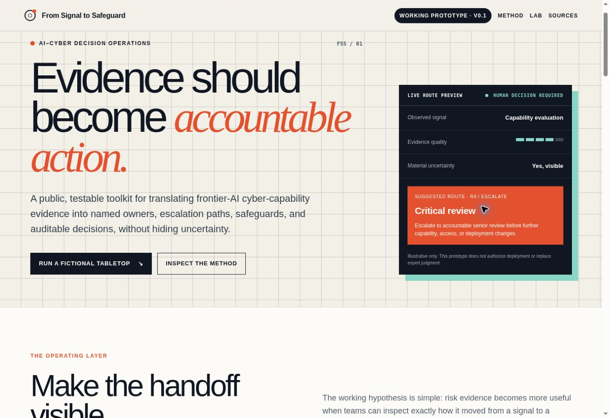

The patient is not a data container.
Their words, goals, affordability, capacity, preferences, and practical reality belong in the context, not outside it.
Personal Health Intelligence Layer
Your health is not fragmented. Your health data is.
PHIL is a patient-controlled context concept for turning scattered health information and lived experience into a clear, source-aware brief for a better clinical conversation, while keeping final judgment human-owned.
The thesis
Nothing exists in isolation.
Biology, behavior, environment, access, lived experience, and care shape one another. PHIL asks what changes when health technology starts with the whole person instead of the easiest available data point.
The ideology
PHIL is built around a simple position: better health technology should make complexity legible without pretending that complexity has been automatically resolved.
Their words, goals, affordability, capacity, preferences, and practical reality belong in the context, not outside it.
Every meaningful detail should retain its origin, date, and verification state so people can tell what is known, reported, inferred, or still uncertain.
Timing, variation, and relationships can create better questions. They do not establish diagnosis, causation, or treatment direction by themselves.
Technology can organize, summarize, and surface context. Final interpretation, sharing, and clinical decisions remain with accountable people.
The proposed layer
PHIL explores a workflow where fragmented sources are brought into context, converted into a patient-controlled preparation brief, and verified before they enter a clinical conversation.
Functional concept prototype
The current prototype uses a fictional patient scenario to make the concept tangible. It demonstrates the workflow, the interface boundaries, and the questions that still need validation.

Connects biology, behavior, lived context, and care while preserving source provenance.
Places events in sequence while keeping correlation separate from causation.
Lets the patient choose priorities and questions for the clinical conversation.
Requires verification before a brief is approved for sharing.
Safety is part of the architecture
The prototype is not a clinical product. Its boundaries are visible because responsible systems should state what they do not do as clearly as what they can do.
Evidence over hype
The repository separates what exists from what is still a hypothesis. No clinical outcomes, adoption metrics, or practitioner endorsements are claimed.
The concept, opportunity, workflow, boundaries, and validation questions.
Read brief ↗How the prototype handles context, provenance, uncertainty, and human verification.
Read methodology ↗The intended use, exclusions, guardrails, and explicit non-clinical boundary.
Read safety notes ↗The fictional scenario used to demonstrate the product without using real health information.
View scenario ↗A structured guide for seeking external feedback without overstating validation.
View review guide ↗The path from concept prototype toward responsible workflow and usability testing.
View roadmap ↗Current evidence status
Interactive concept prototype, patient-controlled visit preparation flow, verification gate, decision record, and supporting documentation.
The demonstration patient, history, results, wearable data, and visit context.
The unmet-need hypothesis, workflow fit, usability, practitioner value, and safety performance.
External practitioner feedback and real-world workflow testing.
Builder
I build systems that make complexity legible and accountability visible. PHIL brings together human-centered technology, health, systems thinking, responsible AI boundaries, and a commitment to separating compelling ideas from evidence not yet earned.
PHIL is not presented as a finished answer. It is evidence of how a difficult system can be observed, framed, made tangible, and bounded responsibly from the beginning.
Explore the repository